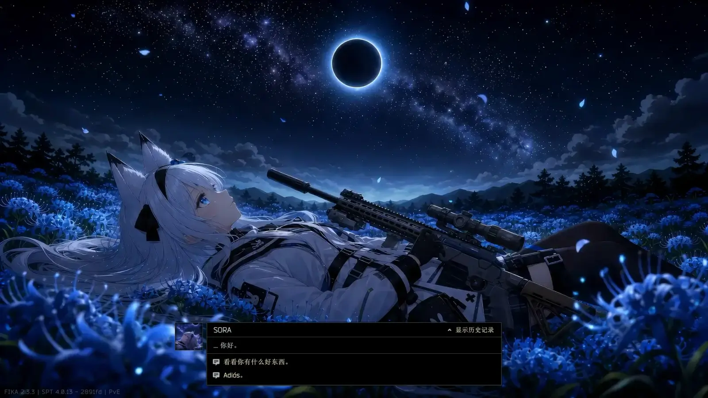

VisitAPI Framework
- Downloads
- 585
- Favourites
- 14
- Mod lists
- 4
VisitAPI Framework
Bring Escape from THE CITY’s native NPC dialogue system to SPT.
An open-source framework for authoring branching trader conversations and dialogue-driven quests — rendered in the game’s own trader dialogue screen, not a fake overlay. No coding: you write everything in plain-text .dlg files. Full guide on the GitHub page.

✨ Features
- Native UI — drives EFT’s real
TraderDialogScreen; backgrounds, subtitles, and options all look 100% vanilla. - Any trader — drop a
.dlgnamed after the trader’s ID and it just works. - Branching dialogue — nodes, conditional choices, narration,
{playerName}, and image / looping MP4 backgrounds. - Three ways to talk — a native “Talk” button out of raid, an in-raid interaction point, or a hideout-area entry.
- Full quest control — accept / complete / hand-over / set-status, standing changes, and options gated by quest status, level, or standing. Works with SPT-native and WTT quests.
- Quest-gated entry — hide a trader’s Talk button until a story beat completes.
- 3D visits (optional pack) — visit the 7 retail traders in their own 3D rooms with voice + gestures, or stage your own scene.
- Bilingual — auto-follows EFT’s language (中 / EN).
📦 Downloads
- VisitAPI (required)
- VisitAPI Scenes (optional) — the 3D vendor-room pack.
🧰 Install
- Extract the release into your SPT root.
- (Optional) Extract the Scenes pack the same way for 3D visits.
- Add your
.dlgscripts toBepInEx/config/VisitAPI/(file name = trader ID).
Ships empty — it does nothing until you add content.
🙏 Credits
VisitAPI — MIT. Scenes assets from bmpq / spt-tradermod (MIT), bundled with credit. Bug or contribution? Leave an Issue on GitHub.
Version
1.1.1
Fixed a bug where crafting recipes for one or more set as favorites would revert to the default after leaving a session or restarting the game.
- Add option for looping video or not in DLG file
- Removed unused or outdated code
Version
1.1.0
Update VisitAPI Framework using native logic from official THE CITY.
- Replaced Diaglog system with NarrateSystem
- 3D scene has been support since using NarrateSystem.
- Added custom 3D scene support detail guide how to make 3D scene can be found in GitHub
- Removed unused or outdated code
Credit to Tarkin for the 3D scene, If you wish to have coverstation with the original trader like official did Download the sence bundle pack and put it into the sence folder.
Version
1.0.0
First Release